O Sistema de Finanças é um sistema que irá lhe auxiliar a controlar empréstimos financeiros tomados pela empresa.
Ele lhe permite adicionar e remover empréstimos feitos pela sua empresa, colocando informações sobre valores, prazos de pagamento e taxa de juros.
Caso haja alguma dúvida de como usar o Sistema de Finanças, basta ver abaixo.
| 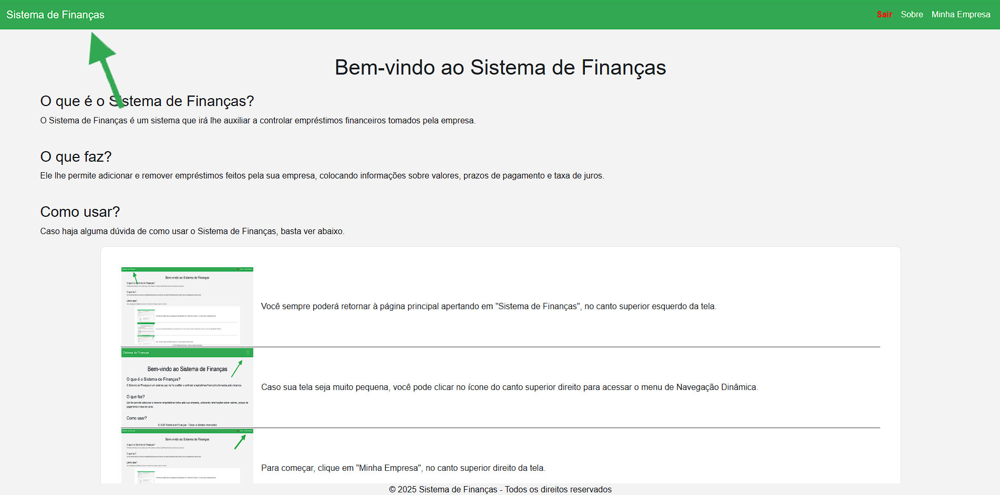 | Você sempre poderá retornar à página principal apertando em "Sistema de Finanças", no canto superior esquerdo da tela. |
| 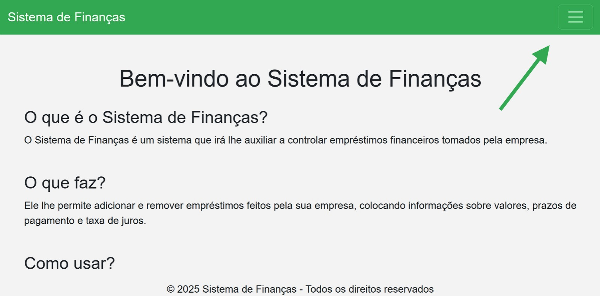 | Caso sua tela seja muito pequena, você pode clicar no ícone do canto superior direito para acessar o menu de Navegação Dinâmica. |
| 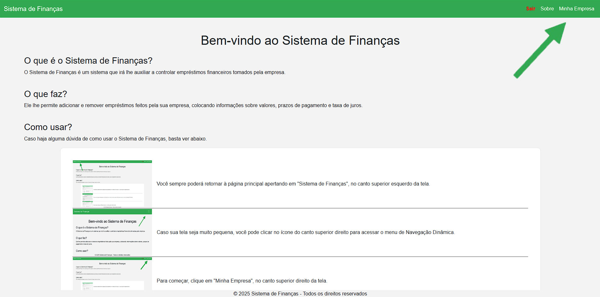 | Para começar, clique em "Minha Empresa", no canto superior direito da tela. |
| 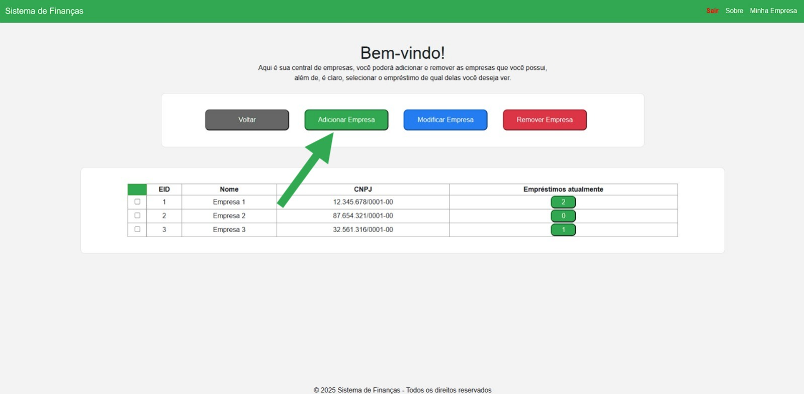 | Para adicioanar novas empresas que estejam em seu domínio, clique em "Adicionar Empresa" |
| 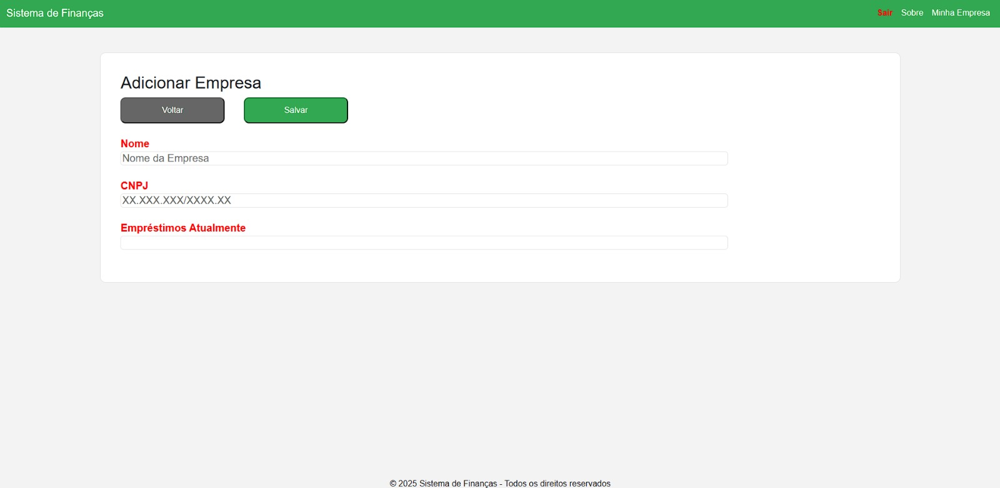 | Você será levado para esse formulário e deverá preencher os campos corretamente. |
| 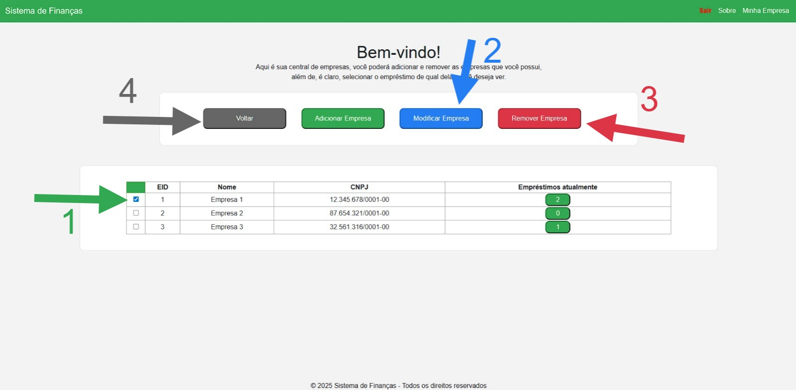 | De volta à página "Minha Empresa", você poderá selecionar a empresa desajada no checkbox (1) e então clicar em "Modificar Empresa" (2) ou "Excluir Empresa" (3), que removerá a empresa selecionada. Ou você pode clicar em "Voltar" (4) para retornar à página principal. |
| 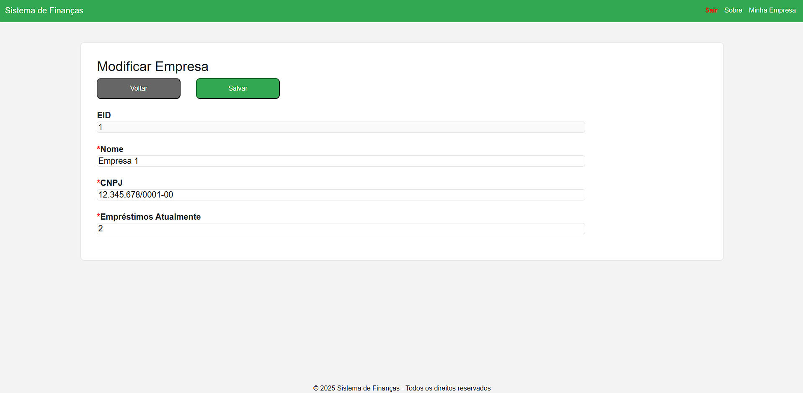 | Clicando em "Editar Empresa", você poderá alterar as informações desejadas livremente, mas nenhum campo deve ficar vazio. |
| 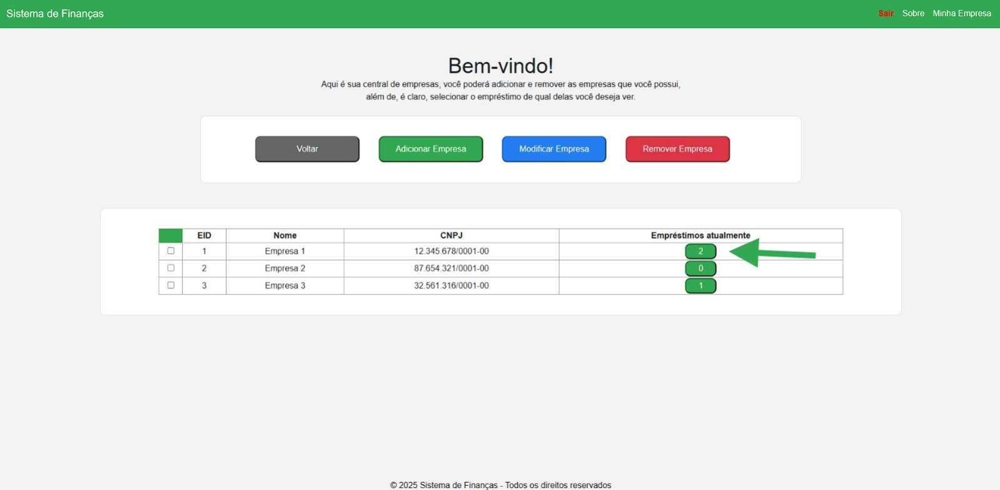 | Você pode clicar no presente no campo "Empréstimos Atualmente" para acessar os empréstimos daquela empresa específica. |
| 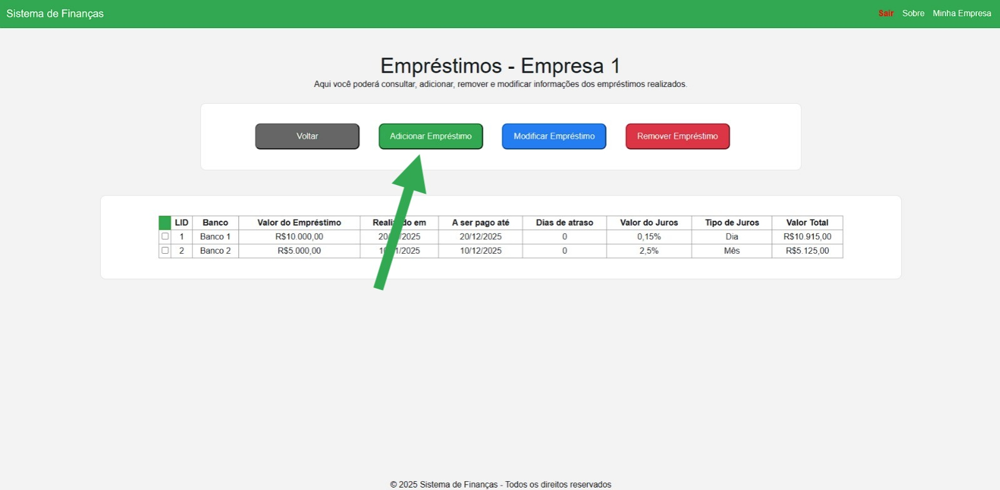 | A interface de empréstimos da empresa é bem semelhante à interface de Empresas. Clique em "Adicionar Empréstimo" (botão verde) para registrar um novo empréstimo. |
| 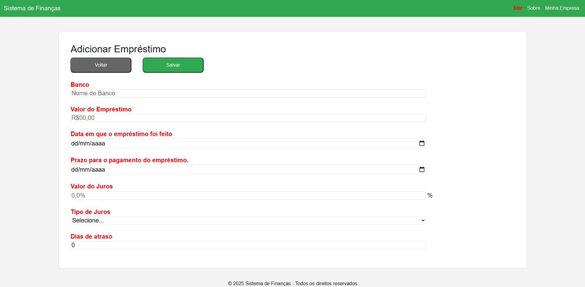 | Você será levado para esse formulário e deverá preencher os campos corretamente. |
| 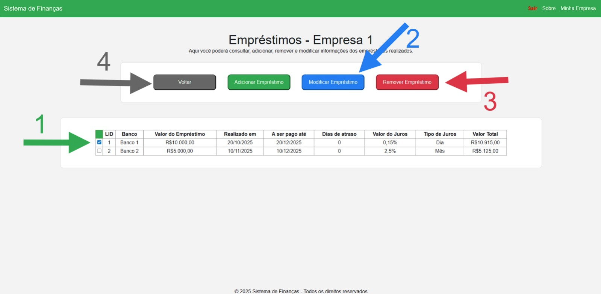 | De volta à página dos empréstimos, você poderá selecionar o empréstimo desajado no checkbox (1) e então clicar em "Modificar Empréstimo" (2) ou "Excluir Empresa" (3), que removerá a empresa selecionada. Ou você pode clicar em "Voltar" (4) para retornar à página "Minhas Empresas". |
| 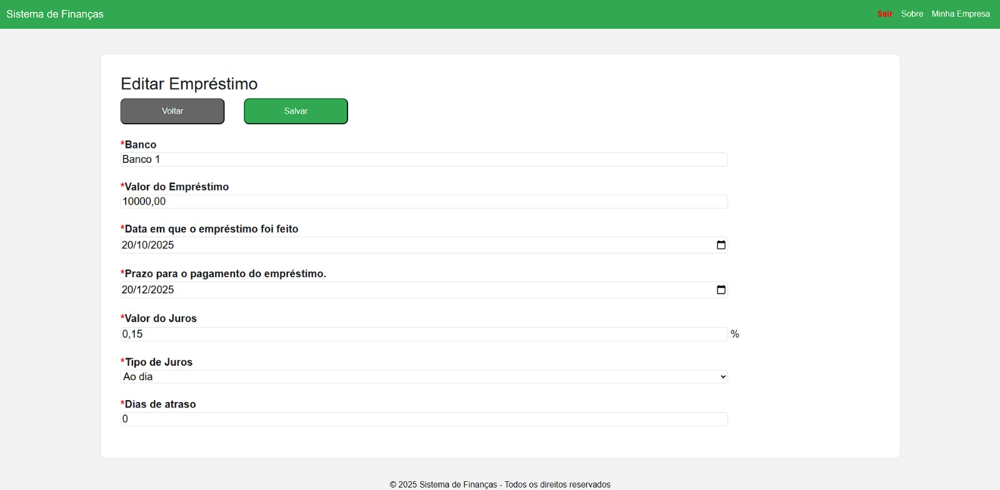 | Clicando em "Modificar Empréstimo", você pdoerá alterar as informações desejadas livremente, mas nenhum campo deve ficar vazio. |
| 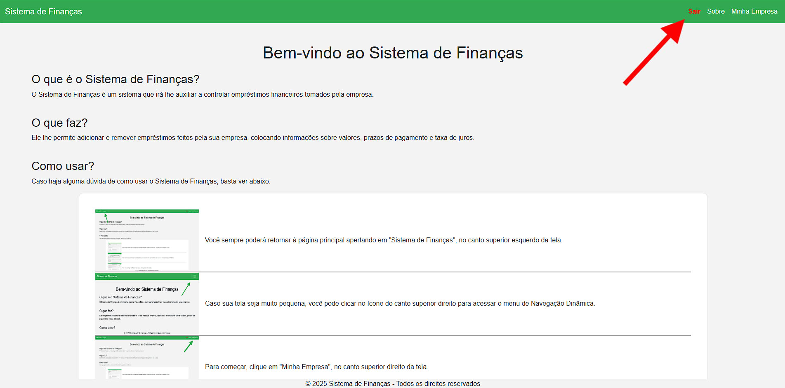 | Ao finalizar todas as suas operações, você pode clicar em "Sair", no canto superior direito da tela, em vermelho, para realizar o logoff. |